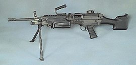

Ручной пулемет М249
Описание
Автоматика «Minimi» действует по схеме отвода пороховых газов из канала ствола с запиранием поворотом затвора. Питание производится из ленты (обычно коробка или сумка на 200 или 100 патронов подвешивается к пулемёту) или из магазина на 30 патронов стандарта STANAG. Пулемёт оснащается открытым прицелом, современные версии несут на ствольной коробке и цевьё стандартные планки RIS для установки коллиматорных, оптических и ночных прицелов и других аксессуаров. На газовой трубке крепится складывающаяся назад в канал цевья двуногая сошка. Ствол быстросменный, для замены ствола или переноски пулемёта оснащен рукояткой.
История:
В США, после того как на вооружение была принята 5,56-миллиметровая штурмовая винтовка M16 (М16А1) системы Стоунера, множество раз предпринимались попытки создать ручной пулемёт под тот же патрон (тогда ещё .223 калибра). Начало попыткам было положено в 1966 году в рамках армейской научно-исследовательской работы по тематике «ручного стрелкового вооружения» (Small Arms Weapons Study или SAWS). Очевидную идею унифицировать пулемёт и винтовку воплотили в нескольких опытных образцах. Семейство стрелкового оружия CAR-15, созданное на основе М16А1 компанией «Кольт», включало ручной пулемёт CAR-15 М2 с ленточным питанием и складными сошками. Несколько пулемётов, имеющих различные системы питания и установки, вошли в опытное семейство стрелкового оружия «Стоунер-63» и были испытаны во время вьетнамской войны. Однако из них лишь ручной пулемёт калибра 5,56 мм с ленточным питанием (ёмкостью 50/100 патронов) был принят на вооружение подразделений спецназначения флота США под обозначением Мк23 и приобретался в небольшом количестве. Параллельно с названным исследованием, своё собственное исследование автоматических вооружений под патрон .30 калибра (7,62 мм) проводилось Континентальным командованием Армии США независимо от других армейских структур в работе над «вооружением стрелкового подразделения пехоты для 1975 года» (Infantry Rifle Unit Study 1975 сокр. IRUS-75), 1975 год рассматривался как дата постановки на вооружение и начала серийного производства перспективного образца. Эту НИР вскоре сменила следующая по тематике «армейского ручного стрелкового вооружения» (Army Small Arms Requirements Study, сокр. ASARS), стартовавшая с одобрения Министра армии США в марте 1973 года. В ходе было рассмотрено большое количество перспективных образцов и концептов, ни один из которых не был признан удовлетворяющим требований армейских чинов. Тем временем, 14 мая 1975 года по итогам 18-месячных баллистических испытаний стандартных и экспериментальных боеприпасов, калибр 7,62 мм был закреплён за ротным пулемётом M60, лимитом для взводного пулемёта был отведен диапазон калибров не превышающих 6 мм. Тогда же программа работ получила своё окончательное название «автоматическое оружие отделения» (Squad Automatic Weapon).